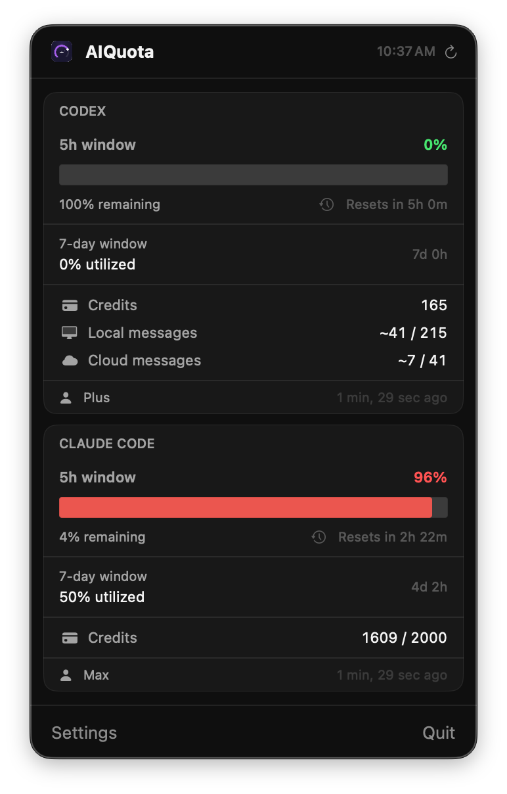
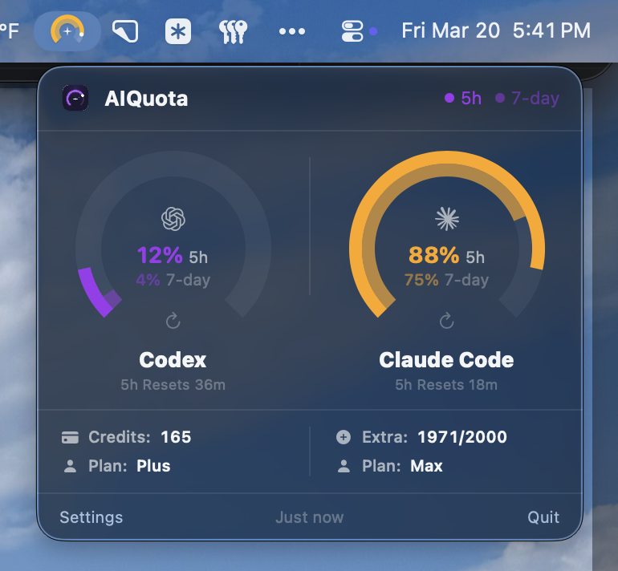

Interruption, On Repeat
Crashing into sudden warnings and halts quickly became the biggest bottleneck in my daily practice. My decisions were being dictated by quotas I couldn’t see. Was I about to hit a wall? Should I ration my prompts? Switch tools? Go touch grass?
The manual process of finding those answers was disproportionately heavy. I had to switch to a browser, dig through provider settings, and do the math by hand. That friction clarified the product quickly: a Menu Bar utility that is legible at a glance and reveals more on click.
First, Figure Out What’s Possible
The hard part wasn’t fetching usage data, but translating two unlike provider systems into one coherent answer.
Both Codex and Claude share the same underlying structure — a rolling 5-hour window, a 7-day allowance, and overflow credits — but each labels and presents them differently. A literal side-by-side would have been technically accurate and mentally noisy. The job was to preserve that nuance without forcing the user to relearn each provider’s logic every time they checked in.
So the early work centered on normalization. What is the common question across both systems? Which details matter before the popover opens, and which can wait until a closer look? How much provider-specific context has to stay visible for the product to feel trustworthy instead of falsely simplified? I treated that translation layer as the product, not as presentation polish after the data model was solved.
That framing shaped the trust model too. Browser-session authentication, Keychain storage, resilient refresh behavior, clear reset timing, and threshold-based notifications were not implementation trivia. They determined whether the utility felt dependable enough to check casually and trust quickly. In products this small, trust is often built from details users could not list individually, but would notice immediately if they failed.
Designing for a Glance
One of the trickiest (and most important) product choices up front, was how much information to visually communicate in the passive Menu Bar state. What detail can we show at a glance? What should we progressively reveal, on click?
The result is a tiered disclosure model: ambient status in the menu bar, compact comparisons on click, and richer context when you need to go deep. It’s a hierarchy designed to keep AIQuota feeling lean and lightweight, while ensuring the data you need is never more than a glance away.

A Visual Grammar For Unlike Systems
To make disparate providers feel coherent, the interface needed a shared UI vocabulary: dual-arc gauges for both your 5-hour and 7-day windows, reset times, and credit counts. Color and motion transform the interface from passive reporting into a decision tool. As usage approaches a limit, states shift from calm to warning—giving you the runway to switch tools or pivot before your momentum hits a wall.
These insights led to a few firm product choices. Gauges prioritize percentage used over raw credits because the real question mid-sprint is risk, not accounting. Warning thresholds fire early on purpose. The menu bar serves as the primary checkpoint during active work because it offers the lowest friction. Widgets then extend that same language to the desktop to provide ambient context without the gravity of dashboard sprawl.
The boundary between specificity and clutter is everything. The best version of AIQuota balances a minimal footprint with deep utility by making the next decision obvious in a second, and rewarding a closer look with enough supporting context to feel trustworthy.


After Launch, The Steady Work of Maturing the Experience
Once the first release was live, the focus shifted from proving the concept to making the utility dependable in daily use. That meant improving auth reliability and smoothing the smaller frictions that only surfaced through repetition. Widgets became a more meaningful part of the product, but the harder work was making them stay in sync, recover cleanly after updates, and feel stable enough to serve as ambient context. Notifications also became more disciplined: thresholds were consolidated, warning language tightened, and low-quota alerts began carrying reset timing so they could help with planning rather than just interruption. Silent updates reinforced that shift, keeping the app current without turning maintenance into part of the job.
Much of that maturation happened below the visual layer. Refresh and cache behavior had to feel current without becoming noisy, while widget timelines, shared defaults, authentication state, and the popover all had to stay aligned across launches, reconnects, and network failures. In a utility this small, reliability is the design. If the data feels even slightly out of step, the product stops feeling trustworthy.
That work reinforced a broader product belief for me: mature utility design is rooted in restraint. The goal is not to invent new reasons to look at the product, but to make the existing moments clearer, calmer, and more dependable. AIQuota gets better each time it becomes easier to ignore until the exact moment it matters.
Shipping in the open sharpened that loop further. Release by release, the feedback made it obvious which details actually shaped trust: setup clarity, stable widgets, cleaner notification language, and fewer edge-case failures after updates. Once the tool became part of someone’s working rhythm, those details mattered more than any new feature headline.
Outside Signal
“What stood out to me is how focused the experience is. It solves a clear problem, stays within its bounds, and doesn’t overreach.”
— Daniel Hairston, on AIQuota’s precision and restraint.
The Case for Thin Utilities
AIQuota exists as a notarized macOS app with menu bar monitoring, desktop widgets, and native notifications. While it supports both Codex and Claude Code, the project continues to evolve through polish passes that prioritize clarity over breadth.
The process validated a specific product pattern. As AI tools become everyday infrastructure, a layer of adjacent workflow problems emerges around them. Some of the most meaningful opportunities are not found in building bigger assistants, but in building thinner native utilities that remove friction at the edges of real working habits.
This reinforced a core conviction: small utilities still demand serious product judgment. The right answer for AIQuota was not more detail, feature sprawl, or a billing-style dashboard. It was a calm, legible answer to a human question asked in the middle of active work: Do I have the runway to get this done?